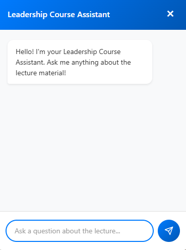

Projects
AI Course Chatbot (In Progress)
(Python, FastAPI, LangChain, FAISS, HTML, CSS, JavaScript)
Engineered an AI-powered conversational assistant integrated into a Thinkific-based leadership training course to provide contextual, in-platform support for learners.
Key Features
- Built a Retrieval-Augmented Generation (RAG) pipeline that processes course materials into vector embeddings for efficient semantic retrieval.
- Developed a Python backend utilizing FastAPI for REST API capabilities, LangChain for vector embedding, and FAISS to retrieve relevant course material for the LLM.
- Designed a lightweight, web-based frontend chatbot widget using HTML, CSS, and JavaScript that seamlessly matches the visual theme of the existing course.
- Implemented interactive UI elements, including a persistent chat bubble, quick access links for frequently asked questions, and animated typing indicators.

Reinforcement Learning Driving Agent
(Python, PyTorch, Pygame)
Developed a Deep Q-Learning (DQN) agent from scratch to autonomously learn optimal racing lines on a custom-built track environment.
Key Features
- Implemented a custom reward function leveraging speed, checkpoints, and track position to guide the agent's learning process.
- Trained the model across 5,000+ episodes with experience replay, epsilon-greedy exploration, and target network updates for stable learning.
- Built a checkpoint system to save and resume full training state (model, optimizer, epsilon) across multiple sessions.
- Integrated Pygame-based simulation with ray casting for real-time state observations and environment rendering.
Swamp Path
(HTML5, CSS, JavaScript, ReactJS, Node.js)
Created a comprehensive course scheduling web application designed to streamline the University of Florida's registration experience.
Key Features
- Interactive calendar interface with real-time conflict detection and time-slot selection.
- Advanced course catalog with integrated professor ratings and credit hour details.
- Academic planner for mapping out future semesters and managing prerequisites.
- User authentication to securely save personalized schedules and academic progress.
Full-Stack Stock Trading Simulator
(React, TypeScript, Python, Flask, Supabase)

Architected and developed a full-stack, session-based stock trading game where users manage a portfolio over a simulated "year" using procedurally generated market data.
Key Features
- Secure user authentication and session management to allow players to resume active games.
- A RESTful API built with Python and Flask to handle all game logic and state changes.
- Robust, atomic database transactions for all buy/sell orders using custom SQL (pl/pgsql) functions to guarantee data integrity.
- A dynamic and responsive user interface built with React and TypeScript for a seamless user experience.
Minesweeper
(C++, SFML)

Interactive minesweeper game developed in C++ to demonstrate OOP concepts.
Key Features
- Custom board and number of mines.
- Debug mode, scoreboard, standard minesweeper functionality.
- Leaderboard to compare solve times.
Personal Portfolio Website
(HTML5, CSS, JavaScript)
A simple portfolio website to showcase my skills and projects.